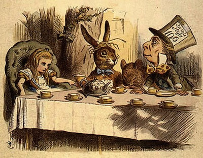

The players all played at once without waiting for turns, quarrelling all the while, and fighting for the hedgehogs
The players all played at once without waiting for turns, quarrelling all the while, and fighting for the hedgehogs; and in a very short time the Queen was in a furious passion, and went stamping about, and shouting 'Off with his head!' or 'Off with her head!' about once in a minute.
Alice began to feel very uneasy: to be sure, she had not as yet had any dispute with the Queen, but she knew that it might happen any minute, 'and then,' thought she, 'what would become of me? They're dreadfully fond of beheading people here; the great wonder is, that there's any one left alive!'
She was looking about for some way of escape, and wondering whether she could get away without being seen, when she noticed a curious appearance in the air: it puzzled her very much at first, but, after watching it a minute or two, she made it out to be a grin, and she said to herself 'It's the Cheshire Cat: now I shall have somebody to talk to.'
'How are you getting on?' said the Cat, as soon as there was mouth enough for it to speak with.
Alice waited till the eyes appeared, and then nodded. 'It's no use speaking to it,' she thought, 'till its ears have come, or at least one of them.' In another minute the whole head appeared, and then Alice put down her flamingo, and began an account of the game, feeling very glad she had someone to listen to her. The Cat seemed to think that there was enough of it now in sight, and no more of it appeared.
'I don't think they play at all fairly,' Alice began, in rather a complaining tone, 'and they all quarrel so dreadfully one can't hear oneself speak—and they don't seem to have any rules in particular; at least, if there are, nobody attends to them—and you've no idea how confusing it is all the things being alive; for instance, there's the arch I've got to go through next walking about at the other end of the ground—and I should have croqueted the Queen's hedgehog just now, only it ran away when it saw mine coming!'